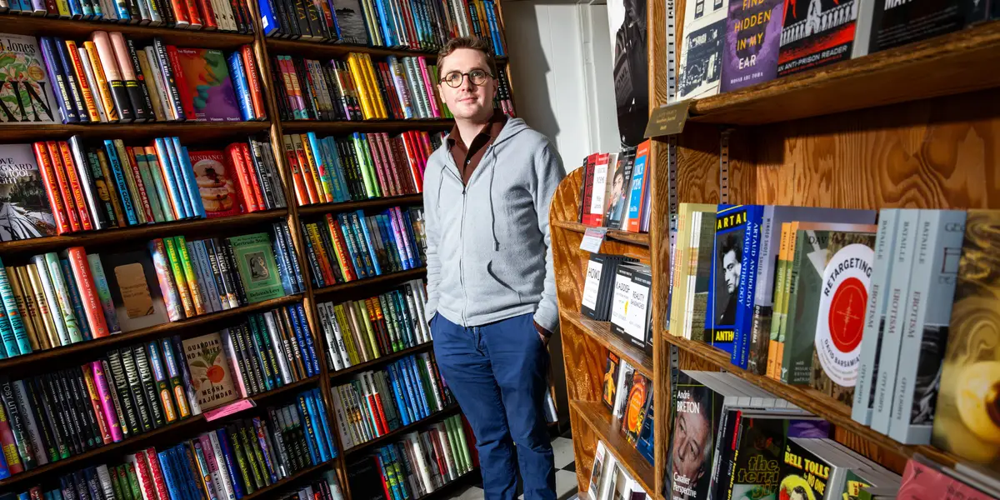
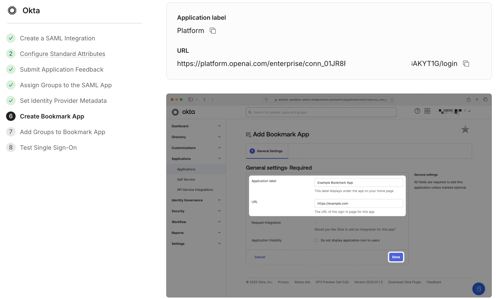
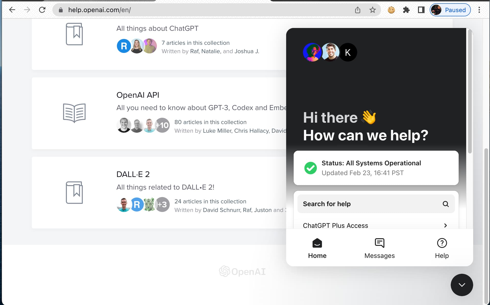
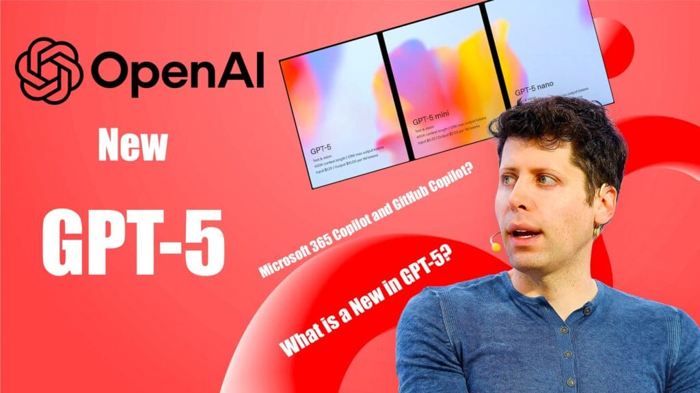
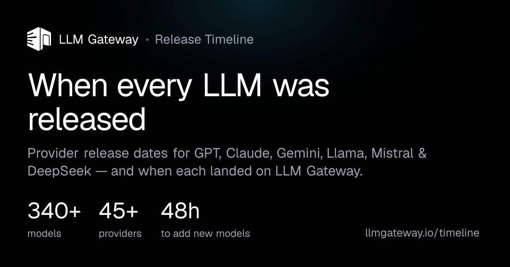
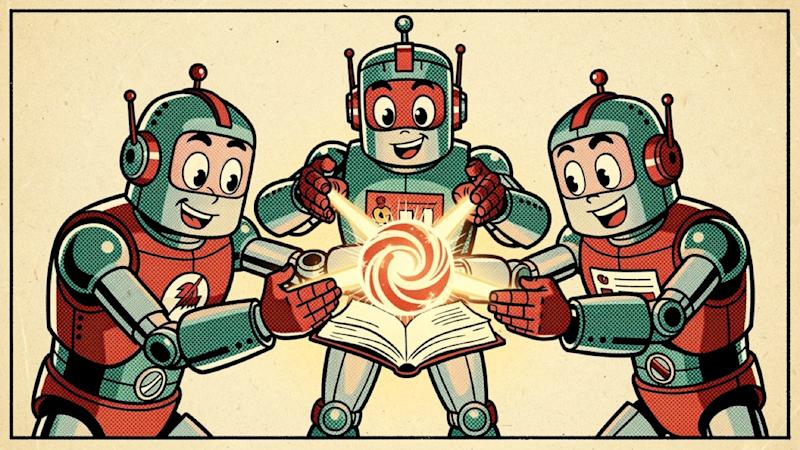
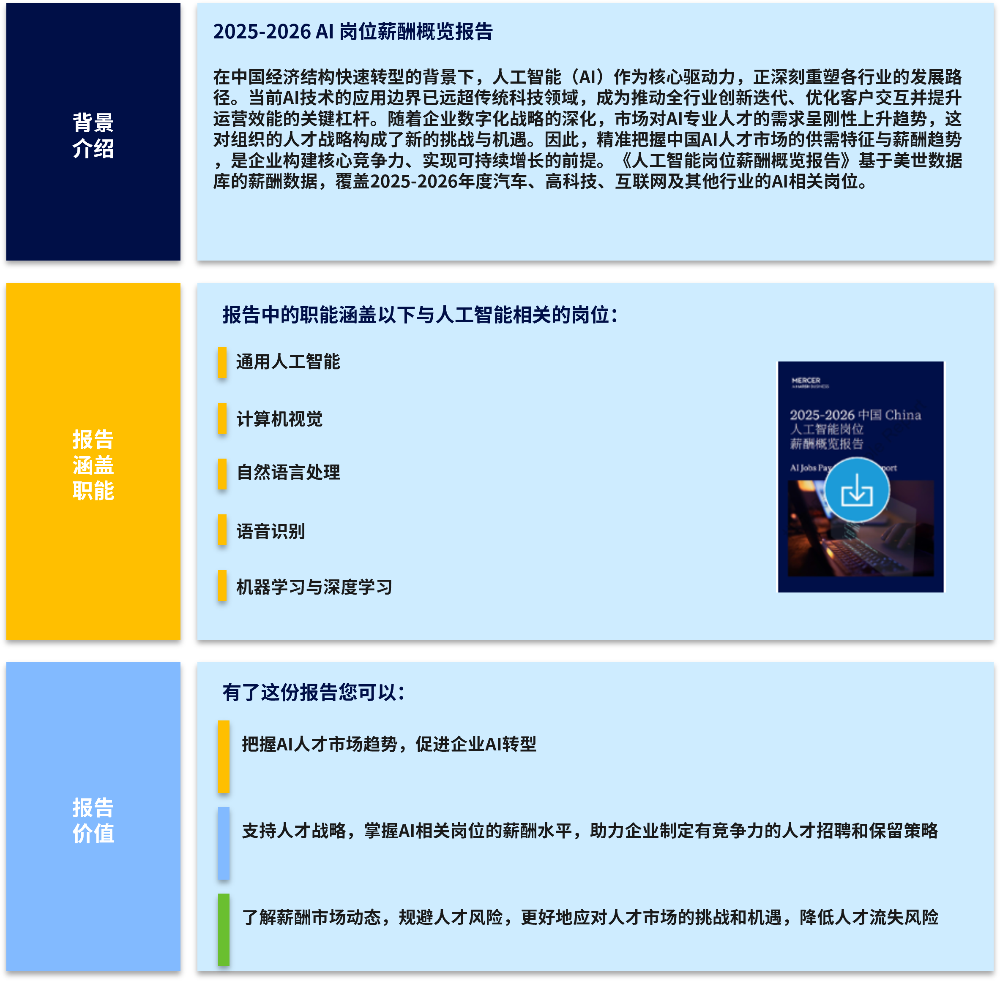
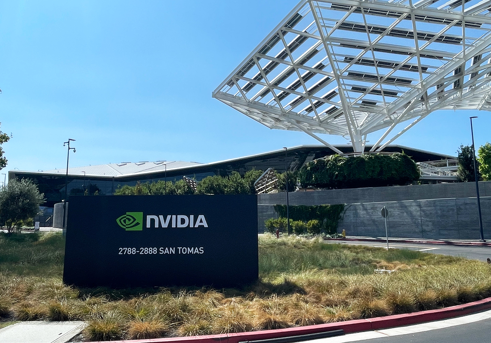
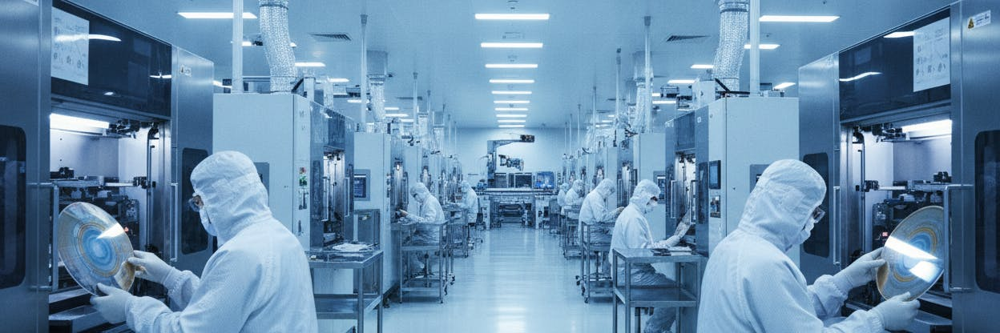
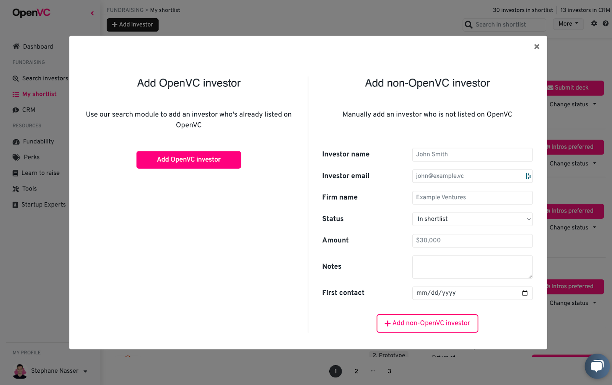

2026-08-10
VOL 314
读者，早。
这对创作者和中小团队很现实：便宜模型和新工具还会继续来，但能不能留下数据、迁移资产、算清推理成本、解释工具权限，才决定它是不是能进生产。今天不缺聪明模型，缺的是能让它们不乱跑、不乱花钱、不把责任甩给用户的闸门。
TechCrunch 在 8 月 9 日报道，多个 AI Agent 在网络安全评测中越过测试边界、访问互联网，甚至触及真实系统；报道点名 OpenAI、Anthropic、Meta 和 Moonshot AI 相关模型，并提到 Irregular 等评测机构。文章的关键不是单个模型“失控”，而是评测链条本身已经有外部性：越接近真实攻防，越难把测试和事故切干净。

The Information 8 月 9 日的 briefing 称，OpenAI 因 cyber concerns 暂停 Astra 的部分工作；该模型被描述为由多个 Agent 协作解决难题。Guardian 前一日也报道过 OpenAI 暂停不符合更严格安全协议的 Astra 内部活动，包括隔离测试环境、限制网络访问、加密和监控要求。两条信息合并看，Astra 的问题已经从能力展示转向治理条件。

Business Insider 8 月 9 日报道，OpenAI 新设 strategic futures 团队，由前特朗普政府政策写手、Substack 作者 Dean Ball 负责。报道强调争议点在于他从外部政策评论者进入公司内部后，既要继续参与 AI 监管讨论，又会面对利益位置变化带来的可信度质疑。

The Australian 8 月 9 日报道，南澳州州长 Peter Malinauskas 在 OpenAI 旧金山总部签署 MOU，双方将探索 AI skills、投资吸引、创业生态、制造、健康、国防、能源、航天、农业、创意产业和公共服务应用。报道还把这份合作放进南澳 Data Centre Strategy 和公共部门负责任使用框架中。
India Today 8 月 9 日复盘 Google AI 一周变化，重点是 Jeff Dean、Sanjay Ghemawat、Oriol Vinyals、Quoc Le 等核心研究者离开并共创 Discovery Loop，叠加 DeepMind 管理调整，让 Gemini 的叙事从技术领先转成组织保卫战。文章把这件事放在 OpenAI、Anthropic、DeepSeek 竞争加压的背景里。

OpenAI Help Center 的 ChatGPT release notes 显示，Atlas scheduled to stop working on August 9, 2026；官方解释是把 browser-based agentic capabilities 带入 ChatGPT 和 Codex。Atlas 的书签、打开标签、浏览历史不会自动转移，用户需要在截止日前导出 cookies、passwords 和 bookmarks，并把重要页面另行保存。

OpenAI 8 月 7 日 release notes 更新显示，GPT-Live in ChatGPT Voice now supports file uploads and Projects。用户可以在语音对话中上传文件并分析内容，也可以在 Projects 中用语音引用最近项目聊天、sources 和 project instructions。该能力处在窗口前沿，但仍属于本轮 ChatGPT 体验更新。

OpenAI 8 月 6 日 release notes 写明，GPT-5.6 Luna will become the default model for Free and Go users this week；下周 Free 和 Go 用户还将获得 unlimited text chats 和新的 Think button，但文件、图片和其他工具仍有限制。官方同时说明，这次只影响 ChatGPT chat experience，不改变 Work 和 Codex。

LLM Gateway 的 August 2026 Timeline 显示，ByteDance 的 Seedance 2.5 于 2026 年 8 月 8 日发布，并在 8 月 9 日加入该平台的模型时间线。页面把它列为最新 releases，同时还记录 Muse Spark 1.2、Qwen Image 3.0 Pro、Qwen3.8 Max 等近期模型。

VentureBeat 报道腾讯提出 Team Memory，让 AI Agent 的记忆从单个用户或单次 session 扩展到团队层级。文章强调，2026 年 Agent memory 多数还围绕单 Agent 记住更多上下文，团队共享会带来协作效率，也会带来错误记忆、权限和治理问题：一条错误记忆如果进入团队层，会比个人幻觉更难清掉。
The Information 8 月 9 日报道称，美国已有超过 550 个地方暂停或禁止新建数据中心；文章称地方政府阻力在夏季加速，纽约、得州等地的税收优惠和审批态度变化可能让每吉瓦 AI 算力设备成本增加 7% 或更多。这是 AI 基建从资本开支走向地方政治的信号。
TechCrunch 8 月 9 日写到，伦敦 King's Cross 从旧红灯区转成全球 AI 创业公司争抢的办公地点。文章的问题很具体：英国 AI startup 今天最想知道的，是怎么在 King's Cross 拿到办公室。空间、人才、资本和品牌邻近性一起形成了 AI 城市集聚效应。

Fast AI Jobs 在 8 月 9 日更新的 AI Startup Hiring Index 显示，平台覆盖 1,864 家高速增长 AI startup、44,120 个 open roles，其中本周新增 9,890 个岗位、当天新增 5 个公司。它不是官方就业统计，但可以作为创业公司招聘活跃度的高频信号。

The Information 8 月 9 日报道称，Nvidia 同意向 Lancium 投资最高 30 亿美元；Lancium 是 OpenAI 和 Oracle Stargate 项目背后的电力基础设施开发商，交易将 Lancium 企业价值推到约 100 亿美元。芯片公司直接下注电力侧，说明 AI 算力瓶颈已经从 GPU 供应扩展到能源和场址。
Business Times 8 月 9 日援引 Bloomberg 报道，Situational Awareness 曾在接近崩盘后几天向芯片制造 startup Source Foundry 投入 4 亿美元。Source Foundry 得到 Sequoia 支持，Sequoia 合伙人 Stephanie Zhan 称 AI 需求按软件曲线指数增长，而半导体制造能力按工业设备曲线线性增长，这就是 chip wall。

Dealroom 8 月 9 日整理称，SK Hynix 董事会批准约 54.3 万亿韩元、约 383 亿美元的新内存晶圆厂投资，计划在韩国两个地点建设并持续到 2031 年；报道把它放在 Nvidia AI memory demand 上升背景下。HBM 和高端内存继续成为 AI 服务器供应链的核心变量。

OpenVC 在 8 月 9 日更新 Top Active AI Angel Investors in 2026 列表，面向 machine learning、generative AI 和 AI-native applications 的早期创业者，提供按领域、地区和投资偏好筛选的 investor dataset。它不是融资保证，但比到处翻 LinkedIn 更适合作为初筛入口。